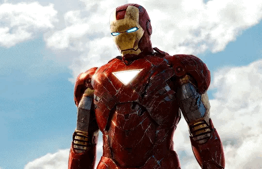
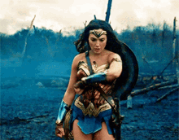

Greetings from BullTrack,
Our platform for tracking job applications is the best resource for organizing your employment search. You can conveniently keep track of all your job applications, interviews, and offers on our user-friendly website in one handy location. Instead of using spreadsheets or paper files, you may enter all the crucial application information on our website and keep everything up to date and organized.
One of the main advantages of using our website is that it gives you a thorough overview of how your job search is going. You can make reminders for follow-up emails or phone calls, monitor the status of your applications and interviews. By doing this, you never miss a chance to network with potential employers and raise your chances of landing a job.
Anybody looking for work should use our website, as well as those who want to keep track of their applications and interviews for future use. It's a straightforward yet effective tool that can assist you in maintaining control over your job search and achieving your professional objectives.
So what are you waiting for? Sign up for our job application tracking website today and exclusively three months free for USF Bulls, followed by $5/month and "$10/month" for everybody else. Use this program to take control of your job search!
| Team Member | Contribution | |
|---|---|---|

Anudeep K A.K.A :"The Thor" anudeepk@usf.edu |
Anudeep, a graduate student at USF, offered helpful advice on how to test and identify mistakes. When the team encountered programming issues or other difficulties, he assisted us. The offers page was one of his contributions. | |

Lokesh Anjaneya Pothana A.K.A :"The Bat Man" lokeshanjaneya@usf.edu |
The main programmer of this HTML page is Lokesh, a graduate student at USF. Having worked as a website developer in the past, he was able to offer insightful advice on how to approach HTML development. The Events page, the IN Process page, and the final CSS and design were his contributions. |

|

Rajashekar Reddy Patlori A.K.A :"The Iron Man" patlori@usf.edu |
Rajashekar, a graduate student at USF, was the key driver behind the group's progress. He was the one who pushed the team to finish projects on time and called meetings to ensure the team was headed in the right direction. He helped with the development of the Home and About Us pages. |  |

Shishira V Kasala A.K.A :"The WonderWomen" shishira@usf.edu |
Shishira, a graduate student at USF, came up with the project's basic concept. She conducted the preliminary study on what should be the website's topic , then shared her ideas and design with the group. The team adopted the concept right away. The website's Wishlist page is a result of her contribution. |  |